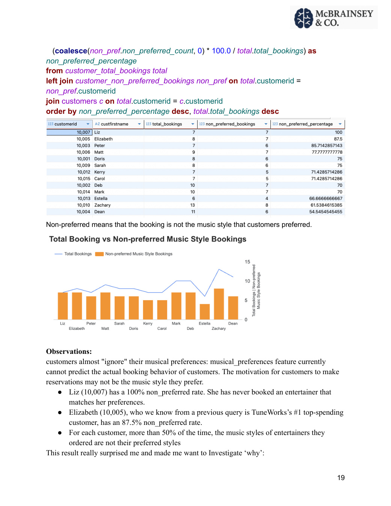
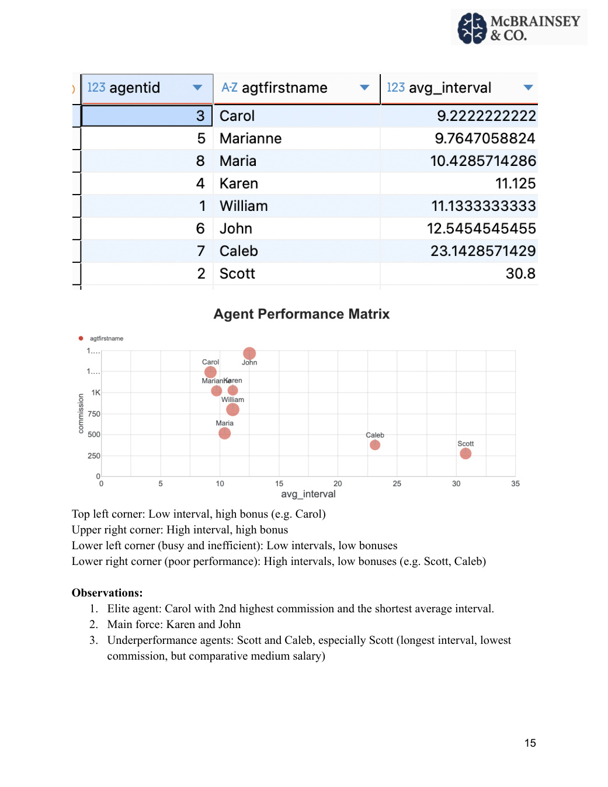

The answer
Behavioral transaction data revealed more useful signals than several static profile fields. The analysis surfaced high-value customers, agent productivity differences, seasonality, concentration risk, and a major mismatch between stated music preferences and actual bookings.
How the database fits together
Engagements is the transactional center of the database: each booking links a customer, an agent, and an entertainer. Additional tables connect entertainers and customers to musical styles and preferences.
The finding that changed the analysis

Customer value & retention
The analysis combined spending, booking frequency, and recency to distinguish different retention needs instead of treating every customer the same.
Highest-value customer
Elizabeth generated $25,585 in spending — nearly twice the next customer — but booked less frequently, suggesting a high-value relationship that deserves personalized retention.
High-frequency loyalists
Zachary and Deb combined strong spending with frequent bookings, making them natural candidates for loyalty incentives.
Agent performance
Window functions calculated the average interval between each agent's bookings, which was then compared with commission. This created a simple productivity view that went beyond base salary.

Business actions
What this demonstrates
CTEs, joins, aggregations, date analysis, and window functions were used to answer business questions — not as isolated syntax exercises. The key analytical habit was letting one surprising query result determine the next question.